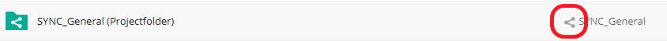
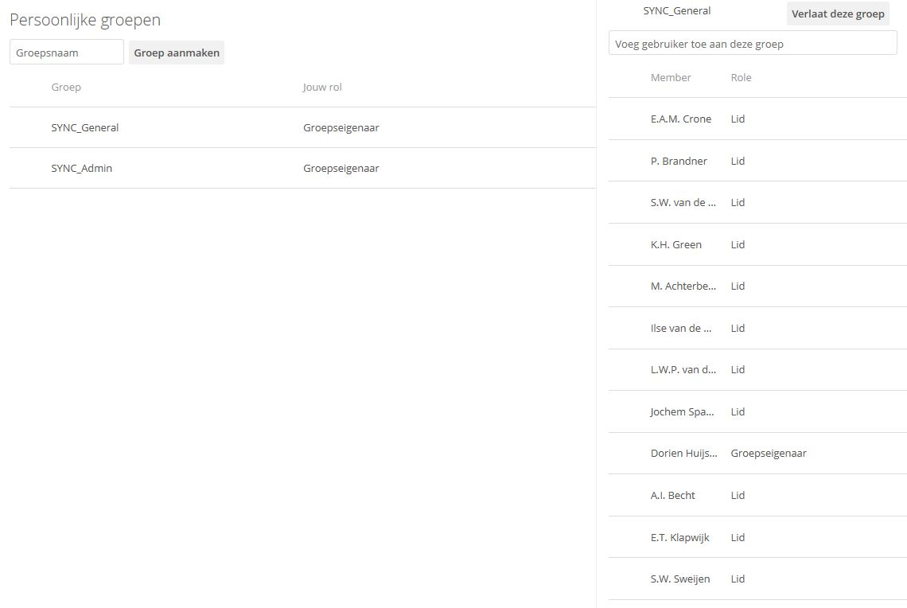
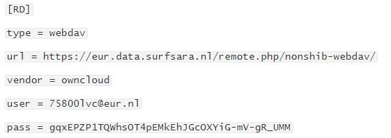
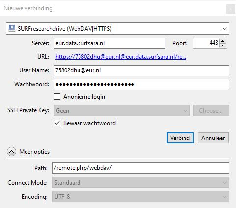
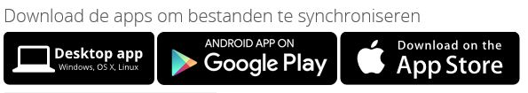

Research Drive protocol
This page contains information on how we deal with data on the SURF Research Drive in the SYNC lab, which can be accessed by logging in here.
1. Folders
- A project folder (at the root of the Research Drive) has to be created by the contract administrator (currently: Mark). This means that each project is created under the contract. Information needed includes:
- the name of the folder (preferably Year_ProjectName, e.g., "2018_Brainlinks"
- the data steward of the project folder
- the amount of storage needed (can be changed later)
- Storage: our contract, “ESSB Brain and Development”, currently has 16 TB of storage capacity which is divided among the existing project folders. More storage capacity has to be requested with Research Data Management/Jeroen Rombouts (who in turn requests this at SURF) by the contract administrator
2. Requesting and providing access
Requesting access (users)
Request access to a folder with the data steward of the relevant project. You can find who is the data steward for which project in the file “ResearchDrive_overview_Projects_Access_Groups” .
Giving access (data stewards)
Select the folder and click the sharing icon.

In the area that appears, you can add individual users or groups and alternatively, create sharing links (URLs) with non-Research Drive users. Giving access to a folder means providing that selected access for all subfolders below the shared folder too.
Preferably never give anyone sharing rights (unless strictly necessary), because that person can give others more rights than they themselves have. This causes you to lose overview of who can access the data.
Custom groups
Give Research Drive users access via personal access groups (Settings > Custom groups). Members in such a group all receive the same rights when added to a folder.

The group owner is the only one who can add and remove access group members and see the members of the group. However, all access group names are visible for the entire Research Drive, so aptly name the groups according to the following format: SYNC_ProjectName_Accesslevel, e.g., "SYNC_Brainlinks_edit". If a new person needs access, they can be added to the relevant access group and automatically gains access to the same files/folders as the other group members.
After you have made any changes in access groups, please update the access document.
Individual users
Add users to folders individually if they should not have the same permissions as the custom groups. This could for example be outside researchers. Please note that users of SURFdrive do not necessarily need a new Research Drive account, you can simply share the relevant files/folders with their Federated cloud ID.
Students and other outside users
Generally, when sharing data with students or outsiders, stick to the following guidelines:
- Share data only when the sharing serves a scientific goal
- Keep the amount of data shared to a minimum
- Pseudonymize or, if possible, anonymize data before sharing
- Students should sign a non-disclosure agreement and stick to the working guidelines for students
Give students and outside users access via access links that allow Download/View/Upload (edit only if it concerns a separate (Students) folder). Make use of the password and end-date functions: students and outside users should not have access to the data after their internships / the agreement have/has ended and the password will give extra protection against non-authorized use. Alternatively, you could add the external users or students as new Research Drive users (Dashboard > Add user), although for large amounts of users, this is not recommended.
3. Uploading data to Research Drive
Rclone
Rclone is a command-line tool to upload data to any location. It can run easily in the background and is relatively simple.
Setting up
-
Download rclone: https://rclone.org/downloads/ (no admin rights needed)
-
Once downloaded, open your Command prompt (search for
cmd) -
Your command prompt shows a drive which it uses, e.g.,
P:/. Move the unwrapped rclone files (at leastrclone.exe) to that drive. -
In your command prompt, type
rclone config -
In your Research Drive account, create a new WebDAV password: Settings > Security > WebDAV passwords. Create a new password by filling in a name, e.g., “Rclone”. Copy the password that was just created to a temporary file/your clipboard.
-
Follow the instructions listed here. Use the following link for step 3: https://eur.data.surfsara.nl/remote.php/nonshib-webdav/ . Your username is
yourERNAid@eur.nland the password is the WebDAV password you just created (you will probably not see the password being pasted, but it is!). When you are asked for abearer token, just pressEnter -
Example summary of the config:

Uploading data with Rclone
Upload files from your command window (type cmd in your search bar if you don't know where it is), using the following general format:
rclone copy [flags] "source" RD:"destination"
Example command
rclone copy -v -P --ignore-existing “J:\ResearchData\FSW\Brain and Development - Projects\2018_Brainlinks\Ouderstudie\” RD:“2018_Brainlinks (Projectfolder)/Brainlinks_Parentstudy”
- copy the source contents to the destination folder
- print progress continuously (
-vand-P) - skip already existing files (
--ignore-existing)
Other Rclone commands
- List the files in the specified folder:
rclone ls RD:“2016_Zelfbeeld (Projectfolder)/Zelfbeeld_Data/Zelfbeeld_ProcessedData/” - Show configuration details:
rclone config show - Edit the configuration details:
rclone config e
More information on Rclone
- On the Research Drive wiki
- Flags to add to commands
Rclone alternative: Cyberduck
Cyberduck is a graphical user interface for uploading data. It also has built-in encryption software (cryptomator), which allows simultaneously encrypting and uploading data.
Setting up
- Download and install Cyberduck (the program is free, select $0 of donation) - you do need admin access for this tool.
- Read the wiki page of SURF Research Drive and from there download the Research Drive cyberduck profile. Save the Research Drive cyberduck profile in the “Profiles” folder within your Cyberduck program files folder (e.g., “C:\Program Files\Cyberduck\profiles”)
- In your Research Drive account, create a WebDAV password: Settings > Security > WebDAV passwords. Create a new password by filling in a name, e.g., “Cyberduck”. Copy the password that was just created to a temporary file/your clipboard.
- (Re)Start Cyberduck
- Click “New connection” (Nieuwe verbinding).
- In the pop-up window that appears, select the SURF Research Drive profile, change the server to eur.data.surfsara.nl and fill out your username (ERNA ID) and the WebDAV password that you just created.
- Do not forget to select “Save password” (Bewaar wachtwoord)! Then, select “Connect” (Verbind).

After having made the connection, you should be able to navigate your (project) folders like in Research Drive. Every time Cyberduck restarts, this connection will be made, except when you explicitly disconnect (then you have to re-connect again).
Uploading data in Cyberduck
- Turn on Checksum (Edit > Preferences > Wachtrij (Queue) > Checksum)
- Select a folder in which you want to upload files
- Click Upload and select the files to be uploaded.
- Once your files have been uploaded, they should appear in your Research Drive!
4. Uploading sensitive data to Research Drive
Encryption
Research Drive cannot contain special types of personal data (bijzondere persoonsgegevens). These comprise of:
- Race, ethnicity, political views, religion
- Sexual life/preferences
- Genetic or biometric data with the purpose of unique identification
- Health information, among which medical data (MRI data!)
- Criminal past
Therefore, the following data need to be encrypted before uploading to Research Drive:
- Participant databases with contact information - using a password on Microsoft Office documents is sufficient
- MRI checklist information files (“Bijzonderhedenbestand”) containing information about past surgeries and other health information - using a password on Microsoft Office documents is sufficient
- Files containing demographic data, responses about race, political views, religion, sexual life, criminal past and other potential health information. This type of file can be stored on Research Drive without encryption only when they are pseudonymized / not directly traceable to individuals.
- Raw, non-defaced MRI images
In general, it is best to avoid having to use encryption, because passwords can be lost and software can deprecate. Data are much more durable if they can instead be anonymized or pseudonymized. For example, upload defaced MRI data and anonymized/pseudonymized health information to avoid having to encrypt them.
How to encrypt?
- Keep it local: don't upload them to Research Drive. If this means you may lose data, don't do this
- Passwords: put a password on a Microsoft Office document (e.g., Excel, Word) and keep the password at a safe location. If you lose the password, the data is not accessible anymore
- Use encryption software: we use Cryptomator to encrypt non-defaced MRI data.
Using Cryptomator to encrypt data
Use Cryptomator when you want to encrypt folders containing multiple sensitive files before uploading that folder to Research Drive:
- Download and install the most recent version of Cryptomator
- Create an encrypted folder (vault). Be sure to create both a password and a recovery key that can be used in case the password gets lost. Save both at a safe location! If you lose them, you cannot access the data anymore.
- Open (decrypt) the vault. In Cryptomator, select a Vault and click "Open vault". Select the cryptomator masterkey file. You will be prompted to fill out the password and afterwards, the folder will open. Note that you need the Cryptomator software to see the files in a normal way. In your file explorer, you will probably only see nonsense files in a folder called 'd'.
- Work with vault contents: after opening a vault, the decrypted files will appear in a separate path on your computer (e.g., "Z://"). You can simply copy the path to tools (Matlab, R) or open files from here to work with them. After usage, remember to lock the vault again.
- Uploading encrypted folders with rclone works the same way as uploading regular folders!
Encryption within Cyberduck
Cyberduck has in-built functionality to encrypt files using Cryptomator:
- In Cyberduck, select the folder in which you want to create the encrypted folder
- Right click and select “New locked vault” (Nieuwe versleutelde safe)
- Give the vault a name (remember to put the Project name in there, e.g., “Brainlinks_Neural_data_raw”) and a password. Store the password somewhere safe immediately.
- You can now upload folders into this encrypted folder as with normal folders. In the background, Cyberduck will decrypt your encrypted folders automatically (because it knows the password), which is why it looks no different than a normal folder in the Cyberduck environment.
Saving and sharing passwords
A few safe options are:
- Lastpass stores your passwords in a vault in the cloud (behind 1 master password). It can also store secure notes (such as Cryptomator recovery keys) and allows sharing passwords with others (premium version: Network center > Share item).
- Network drive: make sure that the drive is secured, backed up and only accessible to those who are allowed to decrypt the data
- Locally: keep in mind that when your PC is hacked, hackers may have access to the passwords and when your PC / drive crashes, the passwords may be lost.
- You can share passwords via SURFfilesender: per password and recovery key, create a txt file. Send it/them via SURF filesender and make sure a password is required to download the file(s). Send the password to download to files to the receiver(s) via another way (e.g., text or slack message).
5. Working with data: editing and analysis
Editing documents
The easiest way to edit documents is in your internet browser, because it allows collaborative editing (with OnlyOffice) and changes are automatically saved. If you mount Research Drive to your file explorer and then edit the document at the same time someone else does, there can be merging conflicts and the version with the last edit “wins”.
Mounting Research Drive to your file explorer
You can mount your Research Drive account to your file explorer, so that the Research Drive files can be accessed on your local PC. Note that collaborative editing is not possible this way, and merging conflicts may emerge when multiple people are working on the same files. OwnCloud is the recommended tool that is useful for working with small and few files. However, it is not suitable for synchronizing large (numbers of) files.
- Download the OwnCloud via this link or in Research Drive, go Settings. Scroll all the way down until you see something like this. Click on "Desktop app":
 - Choose the installation location wisely: if you are going to work with large amounts of data, install Owncloud on a hard disk with sufficient storage space.
- See the Research Drive wiki page for how to configure OwnCloud
- Use the link eur.data.surfsara.nl to connect with and authorize the share by logging in to your Research Drive account
- Choose Selective synchronization and select only the folders you need to work on from your local machine. All synced files are stored and synced on your local machine. If your Research Drive storage is really high, you should not sync them all with your PC!
- Alternatively, choose Virtual file support, which makes sure that only files that are being worked on are downloaded
- To work with encrypted folders:
- synchronize the encrypted folder to your PC (somewhere with enough disk space) - this will probably take some time depending on the size of the folder
- open Cryptomator and select Open vault
- open the cryptomator masterkey file and fill out the password
- you should now be able to see your files and work with them. Bonus: your work will be automatically synchronized with Research Drive as long as you work in the synchronized folder
Analyzing data from Research Drive
There are multiple ways that you can analyze data that are stored on Research Drive:
- Use OwnCloud and run analyses on data that are stored in Research Drive as if the data were stored on your local PC.
- Advantage: cloud synchronization
- Disadvantage: requires sufficient disk space, synchronization may take a long time
- Use a cloud computing service, such as Jupyter Hub (built into Research Drive) or the LISA cluster
- Advantage: no local copies needed, fast analysis
- Disadvantage: mostly meant for large data analysis, may take some getting used to
- Locally: download the data to your local PC and analyze them there
- Advantage: no dependencies on your internet connection
- Disadvantage: not great for a lot of data, no cloud synchronization, requires manual upload to Research Drive afterwards
Working with MRI data: recommended method
- Deface the MRI data before uploading them to Research Drive. If this is not possible (anymore), encrypt the folder that contains the relevant data as high as possible in the hierarchy, so that you only have to decrypt one folder for analyses.
- When installing Owncloud, choose a location with sufficient disk space (e.g., an external hard disk)
- Synchronize only the folder(s) that you need on your local PC via OwnCloud: your PC needs to have enough disk memory to save the data, also after processing! Note that syncing may take a while.
- After synchronizing, if needed, use Cryptomator to decrypt the folder (enter the password)
- The folder is now shown as a separate directory on your local PC (e.g., "Z:"). You can add this directory in SPM or Matlab for your analysis.